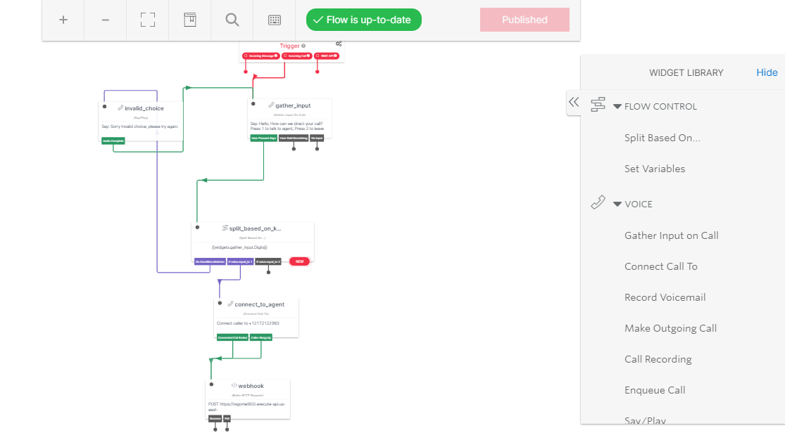

Twilio Studio
Twilio's visual application builder is used to visually create, edit, and manage communication workflows in Studio. Drag and drop widgets to build voice, messaging, and communications apps, and save the coding work for higher-order tasks. It can be used to craft everything from order notifications, to phone trees, to survey tools, to SMS-enabled chatbots.
Studio Features
- Trigger Flows via Inbound SMS, Inbound Voice Calls, and Webhooks
- Create, Modify, and Deploy Flows (Workflows)
- Import and Export Flows
- Add and Remove Transitions
- Manage Widget Settings with the Inspector Panel
- Define Transitions to Advance Users through Flows
- Create and Pass Variables
- View Executions (Individual runs through flows)
- Organize Use Cases and Logic in Separate Flows
Get started with Twilio Studio
